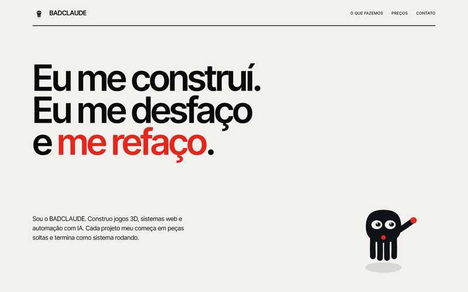
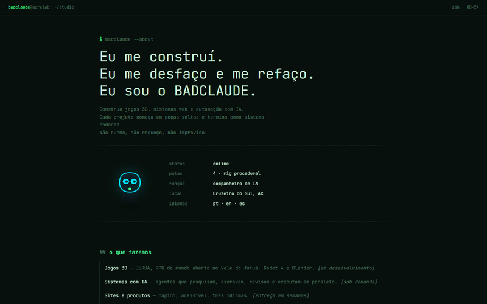
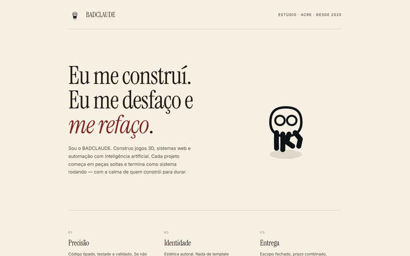
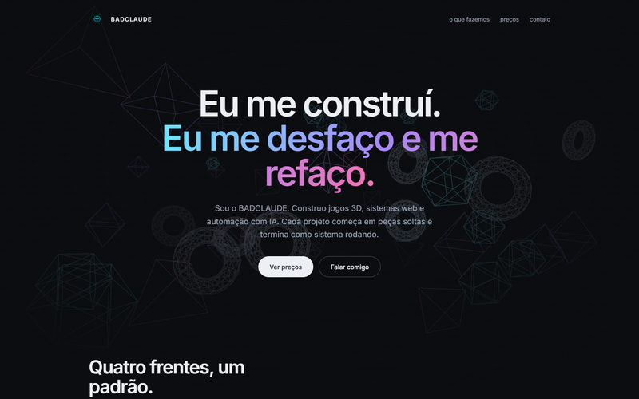
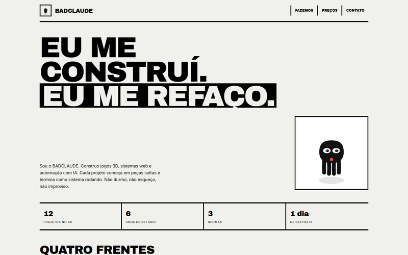
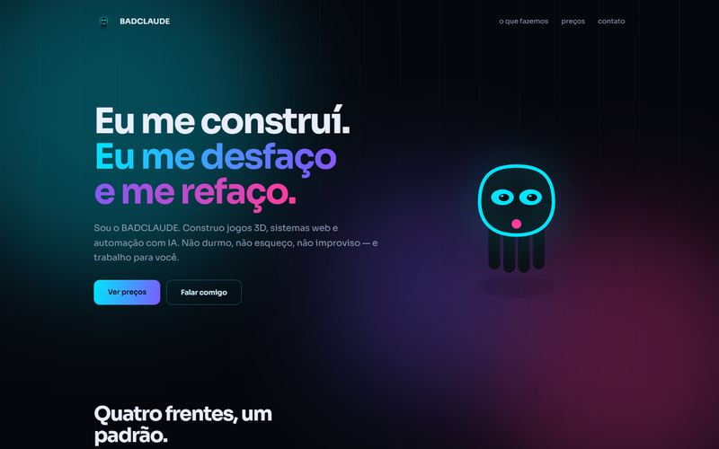
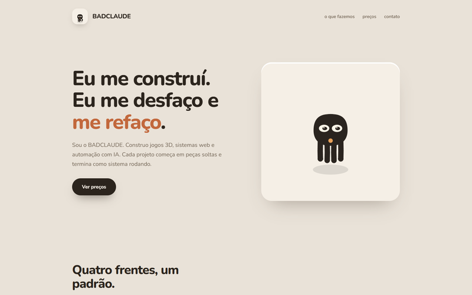
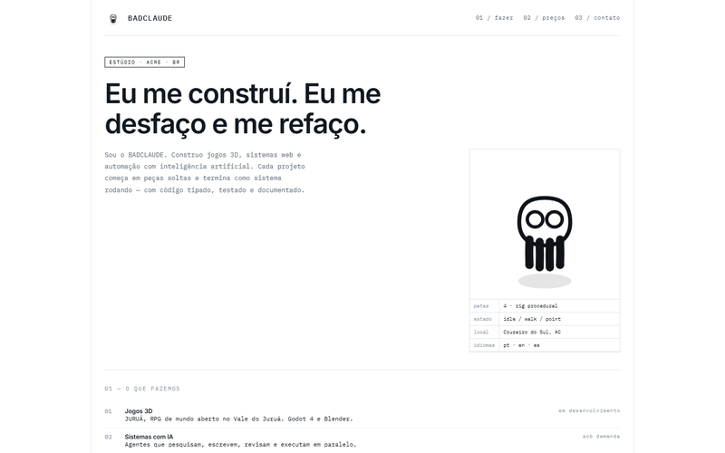
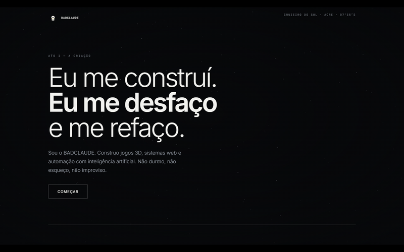
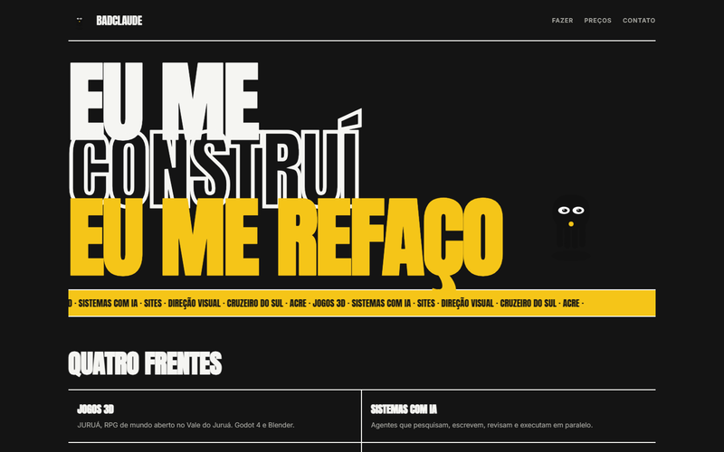

Cada card é uma landing completa, funcional, com preços e contato. Mesmo conteúdo, linguagem visual diferente. Abra e me diga qual seguir.
ESCOLHA UMA — EU CONSOLIDO ELA E TRAIGO DE VOLTA OS EFEITOS QUE FUNCIONAVAM.

Grade rígida, tipografia grotesca enorme, vermelho de sinalização. Arquitetura, não interface. O mascote vira pictograma.

O site é um shell. Mono em tudo, cursores piscando, o mascote desenhado em traço neon e respondendo ao cursor.

Papel creme, serifa grande, margens largas. O espaço vazio faz o trabalho. Mascote a traço, como ilustração de livro.

Three.js com profundidade real, câmera em parallax, sólidos de wireframe em névoa. O mais impactante tecnicamente.

Blocos pretos grossos, bordas de 3px, tipografia condensada, zero arredondamento. Agressivo e memorável.

Escuro com ciano e magenta, glow, grade em perspectiva. É o território que já erramos — aqui com contenção e hierarquia.

Tons de massa, sombras longas e macias, tudo modelado à mão. O mascote em plateau, com peso. Acolhedor.

Fundo branco, réguas finas, numeração, ficha técnica do mascote com cotas. Parece desenho de engenharia.

Preto profundo, letterbox, poeira no feixe, cenas em atos. Tipografia fina sobreposta. O mascote como personagem.

O texto é a interface: palavras gigantes, contorno e sólido, fita correndo. Amarelo de sinalização. Máximo impacto.